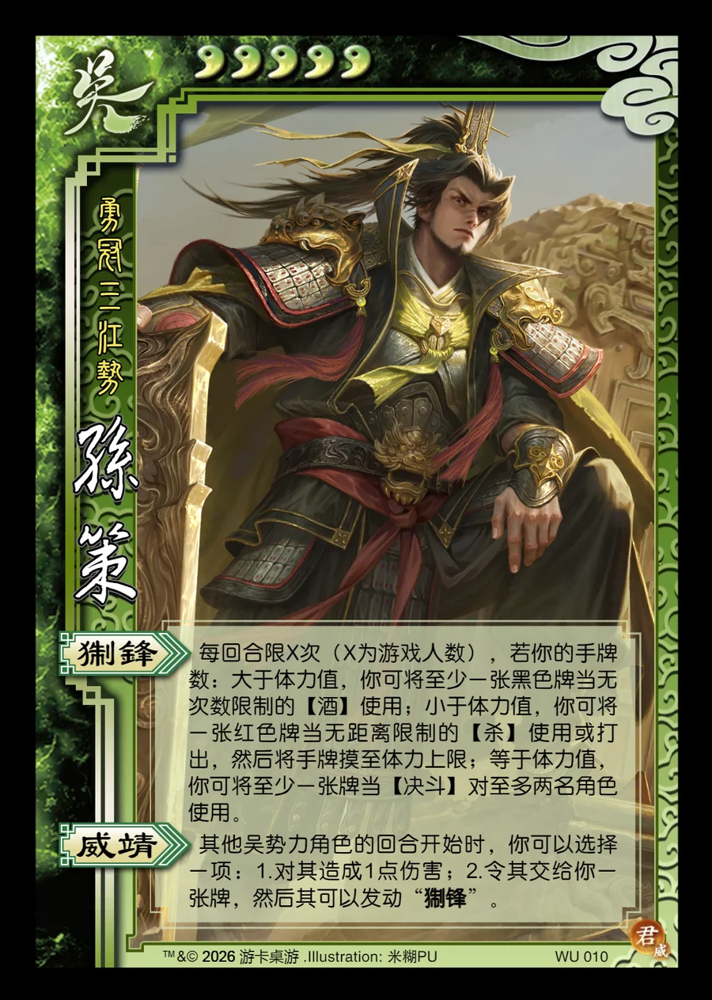

点击卡面查看大图
吴
威孙策
♥5勇冠三江势
猘锋
每回合限X次（X为游戏人数），若你的手牌数：大于体力值，你可将至少一张黑色牌当无次数限制的【酒】使用；小于体力值，你可将一张红色牌当无距离限制的【杀】使用或打出，然后将手牌摸至体力上限；等于体力值，你可将至少一张牌当【决斗】对至多两名角色使用。
威靖
其他吴势力角色的回合开始时，你可以选择一项：1.对其造成1点伤害；2.令其交给你一张牌，然后其可以发动“猘锋”。

点击卡面查看大图
勇冠三江势
每回合限X次（X为游戏人数），若你的手牌数：大于体力值，你可将至少一张黑色牌当无次数限制的【酒】使用；小于体力值，你可将一张红色牌当无距离限制的【杀】使用或打出，然后将手牌摸至体力上限；等于体力值，你可将至少一张牌当【决斗】对至多两名角色使用。
其他吴势力角色的回合开始时，你可以选择一项：1.对其造成1点伤害；2.令其交给你一张牌，然后其可以发动“猘锋”。